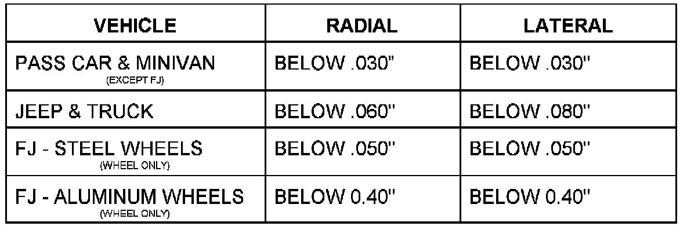

Tire and Wheel - Runout
NO: 22-01-97GROUP: Wheels & Tires
DATE: Jun. 13, 1997
SUBJECT:
Tire & Wheel Runout
MODELS:
1994 - 1995 (AA) Spirit/Acclaim/LeBaron Sedan
1994 - 1997 (AB) Ram Van/Wagon
1994 - 1995 (AJ) LeBaron Convertible
1994 - 1997 (AN) Dakota
1994 (AP) Shadow/Sundance
1994 - 1995 (AS) Town & Country/Caravan/Voyager
1994 - 1997 (BR) Ram Pickup
1994 - 1995 (ES) Chrysler Voyager (European Market)
1995 - 1997 (FJ) Sebring/Avenger/Talon
1996 - 1997 (GS) Chrysler Voyager (International Market)
1995 - 1997 (JA) Cirrus/Stratus/Breeze
1996 - 1997 (JX) Sebring Convertible
1994 - 1997 (LH) Concorde/Intrepid/LHS/New Yorker/Vision
1996 - 1997 (NS) Town & Country/Caravan/Voyager
1995 - 1997 (PL) Neon
1994 - 1997 (SR) Viper/Viper GTS
1997 (TJ) Wrangler
1994 - 1997 (XJ) Cherokee
1994 - 1995 (YJ) Wrangler
1994 - 1997 (ZJ) Grand Cherokee/Grand Wagoneer
DISCUSSION:
Radial runout is the vertical distance between the high and low points on the tire or wheel edge measured at the center line of the tread.
Lateral runout is the horizontal movement of the tire or wheel measured near the shoulder of the tire.
Runout of more than the preferred specification may cause the vehicle to shake. Refer to the following specifications and appropriate Service Manual procedures.

PREFERRED TIRE & WHEEL RUNOUT
Usually runout can be reduced by relocating the wheel and tire on the wheels studs and/or rotating the tire on the wheel (match mounting).
POLICY: Information Only